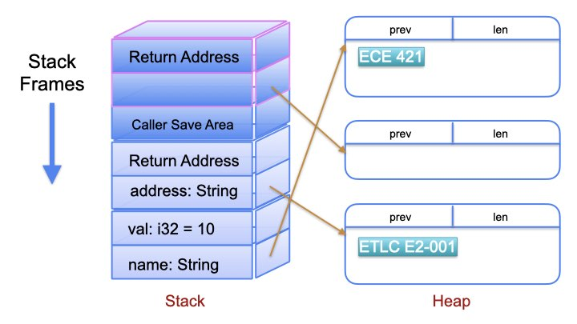
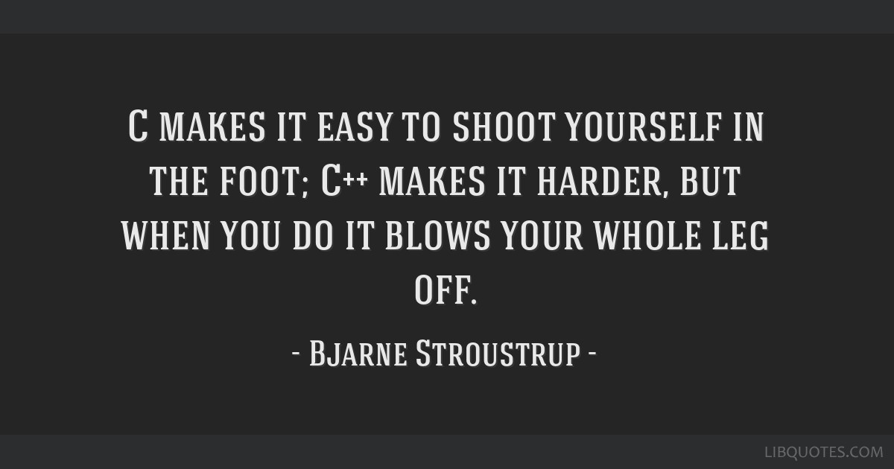

Ownership
Ownership is the feature that allows Rust to make guarantees about memory safety and integrity without compromising performance.
The famous borrow checker runs at compile time, and enforces Rust's ownership rules to ensure safe and fast access to data.
Ownership Rules
- Every value has an owner
- Each datum has one owner at a time
- When the owner's lifetime ends, the data is released
Stack vs Heap
Stack vs Heap Representation
| Property | Stack | Heap |
|---|---|---|
| Scope | Known | Unknown |
| Speed | Pre-allocated | Complicated |
| Size | Somewhat limited | Close to unlimited |
| Locality | Reasonably good | Random |
The Problems
The following C program compiles without errors or warnings It also (mostly) "works"
#include <stdio.h>
#include <stdlib.h>
typedef struct foo {
long field;
} Foo;
Foo* start(int n) {
return (Foo*) malloc(n*sizeof(Foo));
}
void done(Foo *base) {
free(base);
}
#define N 3
int main(int argc, char **argv) {
Foo *array = start(N);
int i=0;
Foo *p = &array[0];
while (i++ <= N) {
(p++)->field = i;
}
done(p);
while (i >= 0) {
printf("%ld ", array[--i].field);
}
return 0;
}
The Problems
The following C program compiles without errors or warnings It also (mostly) "works"
#include <stdio.h>
#include <stdlib.h>
typedef struct foo {
long field;
} Foo;
Foo* start(int n) {
// Should check result of malloc
return (Foo*) malloc(n*sizeof(Foo));
}
void done(Foo *base) {
free(base);
}
#define N 3
int main(int argc, char **argv) {
Foo *array = start(N);
int i=0;
Foo *p = &array[0];
while (i++ <= N) { // access pass the end of the array
(p++)->field = i;
}
done(p); // p doesn't even point to the malloc base
while (i >= 0) {
// use after "free" AND access before beginning of array
printf("%ld ", array[--i].field);
}
return 0;
}
Move vs Copy
Simple primitive types have known, fixed size, and can be quickly copied
fn main() { let x = 5; let y = x; println!("x = {x}, y = {y}"); }
Dynamically sized object are somewhat more involved
fn main() { let x = String::from("hello"); let y = x; println!("x = {}, y = {}", x, y); }
Here's how a String is represented:

Rust uses a "shallow" copy of x to y (i.e. just the String struct).
We say the ownership of the heap data is Moved to y

Rust will not automatically create "deep" copies of heap data.
However, you can ask for a deep copy with the clone() method

fn main() { let x = String::from("hello"); let y = x.clone(); println!("x = {}, y = {}", x, y); }
Ownership and Functions
"Call-by-value" parameters are exactly the same as stack values
- primitve types with the Copy trait are copied
- dynamic types are Moved
fn main() { let s = String::from("eggs"); let scrambled = cooks_eggs(s); println!("consumed and produced: {}", scrambled); let x = 12; counts_eggs(x); println!("Still here! {x}"); } fn cooks_eggs(eggs: String) -> String { println!("cooking: {}", eggs); String::from("GegS") } fn counts_eggs(amt: u16) { println!("counting {}", amt); }
References and Borrowing
Moving ownership all the time is cumbersome:
fn main() { let s1 = String::from("hello"); let (s2, len) = calculate_length(s1); println!("The length of '{}' is {}.", s2, len); } fn calculate_length(s: String) -> (String, usize) { let length = s.len(); // len() returns the length of a String (s, length) }
Rust allows functions to borrow a value using "references"
fn main() { let s1 = String::from("hello"); let len = calculate_length(&s1); println!("The length of '{}' is {}.", s1, len); } fn calculate_length(s: &String) -> usize { s.len() }
Just like C, the operator & means "address-of".
References are also immutable by default
fn main() { let mut s = String::from("hello"); change(&mut s); println!("The length of '{}' is {}.", s, s.len()); } fn change(some_string: &mut String) { some_string.push_str(", world"); }
Race Conditions
A data race is similar to a race condition:
- Two or more pointers access the same data at the same time.
- At least one of the pointers is being used to write to the data.
- There’s no mechanism being used to synchronize access to the data.
Rust prevents data races by enforcing:
- any number of immutable references
- or exactly one mutable reference
So this is legal:
fn main() { let s = String::from("hello"); let r1 = &s; let r2 = &s; // two immutable references println!("{}, {}", r1, r2); }
but not
fn main() { let mut s = String::from("hello"); let r1 = &mut s; println!("{}, {}", s, r2); }
or
fn main() { let mut s = String::from("hello"); let r1 = &mut s; let r2 = &mut s; // two mutable references println!("{}, {}", r1, r2); }
Dangling pointers are also called "use-after-free"
fn main() { let use_after_free = dangle(); } fn dangle() -> &String { let s = String::from("hello"); &s }
Slices
A String slice is a fixed size reference to String data.
fn main() { let s = String::from("hello world"); let hello = &s[0..5]; let world = &s[6..]; println!("{}, {}!", hello, world); }